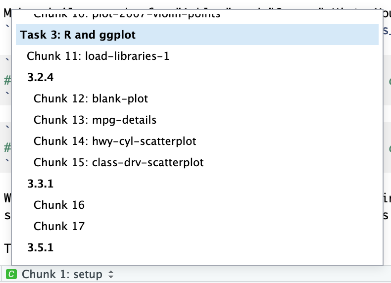

R Markdown
R Markdown is regular Markdown with R code and output sprinkled in. You can do everything you can with regular Markdown, but you can incorporate graphs, tables, and other R output directly in your document. You can create HTML, PDF, and Word documents, PowerPoint and HTML presentations, websites, books, and even interactive dashboards with R Markdown. This whole little website is created with R Markdown—you can make even more complicated websites (like this!) with a package called blogdown.
The documentation for R Markdown is extremely comprehensive, and their tutorials and cheatsheets are excellent—rely on those.
These two resources are incredibly helpful as well:
R Markdown: The Definitive Guide. Look at the PDF chapter for details about fonts and figure sizing, etc. (and the HTML chapter for similar options when knitting to HTML, etc.)
R Markdown Cookbook. This has a bunch of extra tips and tricks, like how to add a manual page break, how to convert R models into math equations, how to change font colors, or how to control the size of images
Here are the most important things you’ll need to know about R Markdown:
Key terms
Document: A Markdown file where you type stuff
Chunk: A piece of R code that is included in your document. It looks like this:
```{r} # Code goes here ```There must be an empty line before and after the chunk. The final three backticks must be the only thing on the line—if you add more text, or if you forget to add the backticks, or accidentally delete the backticks, your document will not knit correctly.
Knit: When you “knit” a document, R runs each of the chunks sequentially and converts the output of each chunk into Markdown. R then runs the knitted document through pandoc to convert it to HTML or PDF or Word (or whatever output you’ve selected).
You can knit by clicking on the “Knit” button at the top of the editor window, or by pressing
⌘⇧Kon macOS orcontrol + shift + Kon Windows.
Add chunks
There are three ways to insert chunks:
Press
⌘⌥Ion macOS orcontrol + alt + Ion WindowsClick on the “Insert” button at the top of the editor window

Manually type all the backticks and curly braces (don’t do this)
Chunk names
You can add names to chunks to make it easier to navigate your document. If you click on the little dropdown menu at the bottom of your editor in RStudio, you can see a table of contents that shows all the headings and chunks. If you name chunks, they’ll appear in the list. If you don’t include a name, the chunk will still show up, but you won’t know what it does.

To add a name, include it immediately after the {r in the first line of the chunk. Names cannot contain spaces, but they can contain underscores and dashes. All chunk names in your document must be unique.
```{r name-of-this-chunk}
# Code goes here
```Chunk options
There are a bunch of different options you can set for each chunk. You can see a complete list in the RMarkdown Reference Guide or at knitr’s website.
Options go inside the {r} section of the chunk:
```{r name-of-this-chunk, warning=FALSE, message=FALSE}
# Code goes here
```The most common chunk options are these:
fig.width=5andfig.height=3(or whatever number you want): Set the dimensions for figuresecho=FALSE: The code is not shown in the final document, but the results aremessage=FALSE: Any messages that R generates (like all the notes that appear after you load a package) are omittedwarning=FALSE: Any warnings that R generates are omittedinclude=FALSE: The chunk still runs, but the code and results are not included in the final document
You can also set chunk options by clicking on the little gear icon in the top right corner of any chunk:

Inline chunks
You can also include R output directly in your text, which is really helpful if you want to report numbers from your analysis. To do this, use `r r_code_here`.
It’s generally easiest to calculate numbers in a regular chunk beforehand and then use an inline chunk to display the value in your text. For instance, this document…
```{r find-avg-mpg, echo=FALSE}
avg_mpg <- mean(mtcars$mpg)
```
The average fuel efficiency for cars from 1974 was `r round(avg_mpg, 1)` miles per gallon.… would knit into this:
The average fuel efficiency for cars from 1974 was 20.1 miles per gallon.
Output formats
You can specify what kind of document you create when you knit in the YAML front matter.
title: "My document"
output:
html_document: default
pdf_document: default
word_document: defaultYou can also click on the down arrow on the “Knit” button to choose the output and generate the appropriate YAML. If you click on the gear icon next to the “Knit” button and choose “Output options”, you change settings for each specific output type, like default figure dimensions or whether or not a table of contents is included.

The first output type listed under output: will be what is generated when you click on the “Knit” button or press the keyboard shortcut (⌘⇧K on macOS; control + shift + K on Windows). If you choose a different output with the “Knit” button menu, that output will be moved to the top of the output section.
The indentation of the YAML section matters, especially when you have settings nested under each output type. Here’s what a typical output section might look like:
---
title: "My document"
author: "My name"
date: "January 13, 2020"
output:
html_document:
toc: yes
fig_caption: yes
fig_height: 8
fig_width: 10
pdf_document:
latex_engine: xelatex # More modern PDF typesetting engine
toc: yes
word_document:
toc: yes
fig_caption: yes
fig_height: 4
fig_width: 5
---